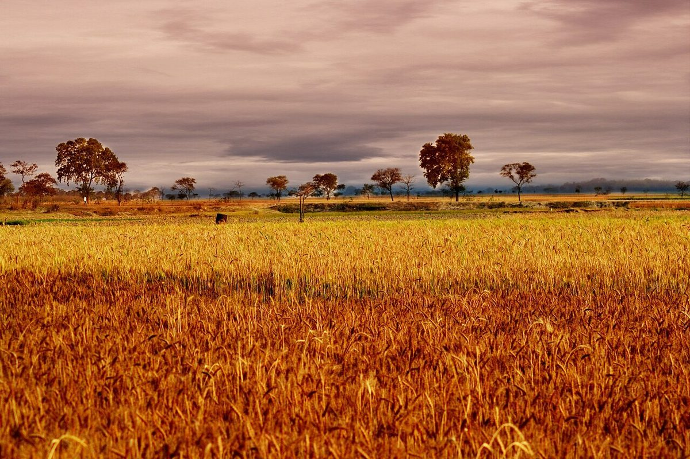

制作側の連想
「塩」の字から、計量スプーンを思いついた。
屋号の由来は分かりません。制作側は「塩」の一字から、料理で使う計量スプーンの「ひとつまみ」を連想しました。そこでこのサイトは、大さじ・小さじ・小さじ1/2・小さじ1/4・ひとつまみの五本のスプーンに、五つのページをなぞらえて並べています。制作側の連想で、お店の理念・由来とは無関係です。
写真はイメージです
粉からパンまで、国外・撮影地不明の写真で。



お店の写真ではありません。実際の写真は貴店ご提供のものに差し替えます。